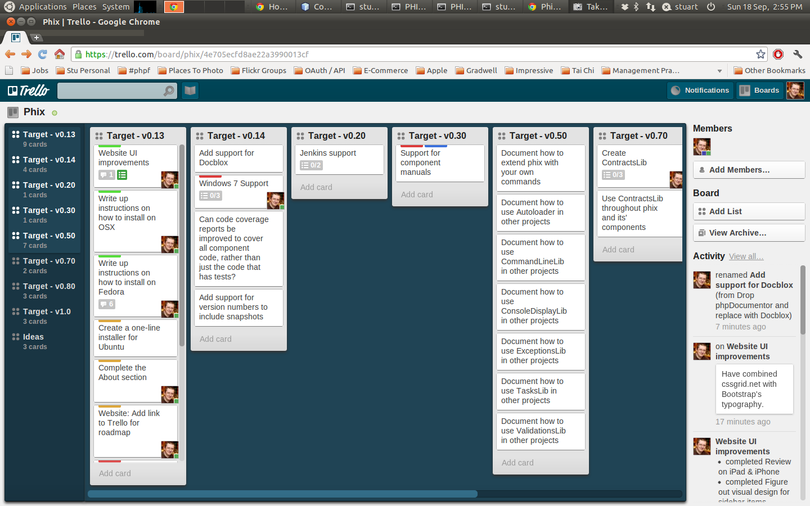

Create And Maintain
Components For PHP
Phix makes it extremely easy to create and maintain your own PEAR-installer compatible components for your PHP applications.
Installation takes just seconds, and best of all it's both open-source and framework-agnostic!
The time developers need to write software, is the number 1 bottleneck in any firm that creates software. Creating your apps and websites out of reusable components can go a long way to helping with that.
Use phix to:
... so that you can spend your time focusing on code, not the infrastructure of your component.
Creating a new component from scratch is a one-line command:
# create a new PHP component in the current folder $ phix php-library:init .
This gives you a complete folder structure - the same one used by phix itself - for you to put your code and tests into.
Want to run your unit tests, and have them generate code-coverage and code-quality metrics? That's all done in a one-line command:
# run your component's unit tests $ phing test
And, once your unit tests all pass, if you want additional code quality information, that's also a one-line command:
# generate code-review information $ phing code-review
Are you using document comment blocks in your code? You can turn those into a browsable website with a one-line command:
# generate API documentation from your PHP code $ phing phpdoc
When you're happy with your component, and you want to package it up, that's a one-line command:
# create a PEAR-compatible package from your component $ phing pear-package
When you're ready to share your package with others, it's just a one-line command to add your package to your existing PEAR channel, if you're using Pirum for creating your PEAR channel:
# publish your PEAR package to your local checkout of your PEAR channel $ phing publish-local
Want to reuse your component in another project? No more cut & paste, no more svn:externals. Make that project a component too, and add your component as a required dependency in the project's package.xml file.
And because package.xml is a standard part of a PEAR package, your project can also reuse any third-party components that are also PEAR-Installer compatible.
Reusing your components is where the real payoff is - so you spend less time re-inventing the wheel, and more time focusing on what's unique to your app.
At the heart of your component are the skeleton files that automate all of the tasks above. Maintaining these skeleton files by hand would be a chore, but with phix, they can be upgraded with a one-line command:
# upgrade the skeleton files $ phix php-library:upgrade .
And best of all ... your component is self-contained. Happy with the component as it is? You don't need to upgrade the skeleton files, which means your components don't break just because you've installed a newer version of phix on your computer.
Want to go futher than phix does, and automate additional tasks that are unique to your working style or environment? Just put those tasks in build.local.xml, and phix will never overwrite them.
If you're building an app, chances are you're working with a framework of some sort. One day, you'll need to change framework. If all of your code is tied to that framework, change will be very very expensive indeed.
By moving as much of your code as is sensible into their own components, you'll be well-prepared for when that day comes.
Watch Stuart Herbert talk at PHPUK 2011 in London about the problems that inspired him to create phix, and how his approach to components evolved:
Beyond Frameworks - Stuart Herbert from PHP UK Conference on Vimeo.
phix is built on top of the PHP tools you may already know, helping them work together to save you time.
phix aims to be the glue that brings the best of the community's existing PHP tools together in an easy-to-use way, such as:
Wherever possible, phix will add support alternative tools, so that you can choose the ones that you prefer.
If you're new to components in PHP, there's a helping hand to explain everything in detail.
phix comes with built-in help to explain what it can do:
# run phix with no args to get the built-in help
$ phix
phix 0.13.1 - http://www.phix-project.org
Copyright (c) 2011 Stuart Herbert and contributors
Released under the BSD license
SYNOPSIS
/usr/bin/phix [ -? -d -h -v ] [ --? --debug --help --version ] [ -I <path>
] [ --include=<path> ] [ command ] [ command-options ]
OPTIONS
Use the following switches in front of any <command> to have the following
effects.
-? | -h
display a summary of the command-line structure
-I <path> | --include=<path>
add a folder to load commands from
phix finds all of its commands by searching PHP's include_path for PHP
files in folders called 'PhixCommands'. If you want to phix to look in
other folders without having to add them to PHP's include_path, use
--include to tell phix to look in these folders.
phix expects '<path>' to point to a folder that conforms to the PSR0
standard for autoloaders.
For example, if your command is the class '\Me\Tools\PhixCommands
\ScheduledTask', phix would expect to autoload this class from the 'Me
/Tools/PhixCommands/ScheduledTask.php' file.
If your class lives in the './myApp/lib/Me/Tools/PhixCommands' folder,
you would call phix with 'phix --include=./myApp/lib'
-d | --debug
enable debugging output
-v | --version
display phix version number
--? | --help
display a full list of supported commands
COMMANDS
component-manager:version # show which version of ComponentManager is
installed
help # get detailed help about a specific phix
command
pear:expand-package-xml # expand the tokens and contents of the
PEAR-compatible package.xml file
pear:register-channels # register the channels for the dependencies
listed in the PEAR-compatible package.xml file
php-docbook:init # initialise the directory structure of a
php-docbook component
php-docbook:status # check the status of a php-docbook project
php-docbook:upgrade # upgrade the structure of a php-docbook project
to the latest version
php-docbook:version # show which version of php-docbook is installed
php-library:init # initialise the directory structure of a
php-library component
php-library:status # check the status of a php-library component
php-library:upgrade # upgrade the structure of a php-library
component to the latest version
php-library:version # show which version of php-library is installed
php-webapp:init # initialise the directory structure of a
php-webapp component
php-webapp:status # check the status of a php-webapp component
php-webapp:version # show which version of php-webapp is installed
See /usr/bin/phix help <command> for detailed help on <command>
Want to know what automated tasks are available inside your component?
# showing the built-in help inside each component
# run this in the top-level folder of your component
$ phing
Buildfile: /home/stuart/Devel/Phix/ConsoleDisplayLib/build.xml
[property] Loading /home/stuart/Devel/Phix/ConsoleDisplayLib/build.properties
> help:
[echo] ConsoleDisplayLib 3.0.0: build.xml targets:
[echo]
[echo] lint
[echo] Check the PHP files for syntax errors
[echo] test
[echo] Run the component's PHPUnit tests
[echo] code-review
[echo] Run all of the code quality targets:
[echo]
[echo] code-browser
[echo] Run code quality tests for PHP_CodeBrowser
[echo] phpcpd
[echo] Check for cut and paste problems
[echo] phpdoc
[echo] Create the PHP docs from source code
[echo]
[echo] build-vendor
[echo] Populate vendor/ with this package's dependencies
[echo] pear-package
[echo] Create a PEAR-compatible package
[echo] install-vendor
[echo] Install this component from source into vendor/
[echo] vendor-pear
[echo] Run additional PEAR commands inside the vendor folder
[echo] install-system
[echo] Install this component from source for all local users
[echo] You must be root to run this target on Linux!!
[echo] publish-local
[echo] Publish your PEAR-compatible package into a local copy
[echo] of your PEAR channel
[echo] clean
[echo] Remove all temporary folders created by this build file
[echo]
[phingcall] Calling Buildfile '/home/stuart/Devel/Phix/ConsoleDisplayLib/build.xml' with target 'local-help'
[property] Loading /home/stuart/Devel/Phix/ConsoleDisplayLib/build.properties
> local-help:
[echo] This component has the following additional commands:
[echo]
[echo] git-tag
[echo] Tag the current version in git
[echo]
[echo] git-force-tag
[echo] Force tag the current version in git (use with caution!)
[echo]
[echo] publish-and-push
[echo] Git push to upstream, publish to PEAR channel
[echo]
[echo] tpp - tag, publish, and push
[echo] Git tag, push to upstream, publish to PEAR channel
[echo]
Stuart Herbert, the author of phix, has published a series of PHP Components blog posts, covering what you need to know about creating and publishing your PHP components.
New releases of phix will be announced there, and also on his Twitter feed.
Phix takes advantage of new features in PHP 5.3 to keep code quality up, and code size down.
phix is a command-line (CLI) tool, which you run from a Terminal or CMD window. You don't need a web browser or a web server to use phix. You would normally install phix onto your development desktop, laptop or virtual machine; you wouldn't normally install phix into your production environment.
Before you install phix, you will need an operating system with PHP 5.3 or later installed. Our one-line installer will take care of the additional requirements.
Hint Apple OSX Lion users might find Rob Allen's instructions for setting up PHP on OSX 10.7 Lion very useful.
If we don't have a one-line installer for your operating system yet, we also provide full instructions for installing from source.
To make sure that your machine has everything that phix relies on, use our one-line install method!
Install phix on either Debian or Ubuntu using our one-line installer:
curl http://phix-project.org/installers/ubuntu-11.04.sh | sudo bash
Be aware you need to sudo the bash, not the curl. Fetching stuff from the Internet doesn't require admin privileges, but installation does.
Install phix on Fedora, CentOS, RedHat Enterprise Linux or other RPM-based Linux distros using our one-line installer:
curl http://www.phix-project.org/installers/fedora-15.sh | sudo bash
Be aware you need to sudo the bash, not the curl. Fetching stuff from the Internet doesn't require admin privileges, but installation does.
If we don't have a one-line installer for your operating system yet, you can still install phix the old-fashioned way.
You will need to install the following tools on your operating system. They're listed in the order you'll probably need to install them in:
| Requirement | Used For |
|---|---|
| PHP 5.3 CLI | Command-line version of PHP, used to run phix |
| PHP XML extension | Used by multiple tools for working with XML files. Be aware not every Linux distro installs this extension by default when you install PHP! |
| PHP XSL extension | Used by documentation tools that phix supports.Be aware not every Linux distro installs this extension by default when you install PHP! |
| PEAR Installer | Used to install PHP components and developer tools, such as phix.Note support for the Pyrus Installer will be added in a future version. |
| PHP PDO extension | A requirement for one of the QA tools that phix supports.Be aware not every Linux distro installs this extension by default when you install PHP! |
| PHP POSIX extension | Used by phix to tell whether to use colours in the output or not.Be aware not every Linux distro installs this extension by default when you install PHP! |
| XDebug | Used for code coverage reporting. |
| PHP ImageMagick extension | Used by the QA tools that phix supports to create diagrams of how good your code is.Note you may need to install this extension from PECL. |
| PHP NCurses extension | Used by phix to discover the width and height of your terminal window.Note this PHP extension is optional. |
| PHP Proctitle extension | Used by phix to make sure you see 'phix' and not 'php' in the list when you run the ps command.Note this PHP extension is optional. |
Once all of the dependencies have been installed, you can then install phix using the standard PEAR installer. Run the following commands as root (on Linux, OSX, and other UNIX-like operating systems) or as a user with administrator privileges on Windows.
pear clear-cache pear upgrade pear/pear pear channel-discover pear.phix-project.org pear -D auto_discover=1 install -Ba phix/phix4componentdev
phix drinks its own champagne - it pulls in and re-uses a number of existing PHP components and developer tools.
Here's a full list of what gets installed when you install phix:
| Tool / Component | Type | Purpose |
|---|---|---|
| PHing | Build tool | Ant-sort-of clone written in PHP, for automating common development tasks. |
| PHP_CodeBrowser | QA tool | Useful code-review tool for browsing through your code and seeing what problems the other QA tools have found. |
| PHP_CodeSniffer | QA tool | Useful code-review tool for checking whether your code meets a prescribed coding standard or not. |
| PHP_Depend | QA tool | Useful code-review tool for analysing the quality of your code. |
| PHP_PMD | QA tool | Useful code-review tool for analysing the quality of your code. |
| PHPDocumentor | Documentation tool | The original way to generate documentation from your PHP code. Note future versions of phix will support alternatives.
|
| PHPUnit | QA tool | The de-facto standard tool for creating and running unit tests of your PHP code. |
| Pirum | Build tool | Creates PEAR channels, where you publish your PEAR-installer-compatible packages. |
Be aware that each of these components and tools will also install components and tools that they, in turn, depend upon.
At the heart of phix is a generic CLI tool, which you can add your own commands to.
When you install phix/phix4componentdev, this is a meta-package that asks the PEAR installer to install:
phix, which is a generic command-line tool, andComponentManager, which adds a set of commands to phix for creating and maintaining PHP componentsEach of the phix commands is implemented in its own PHP class:
PhixCommands namespace,Phix_Project\PhixExtensions\CommandInterface, andPhix_Project\PhixExtensions\CommandBase.phix4componentdev is just an extension to phix that provides the commands for creating and maintaining PHP components.
phix was built to be extensible, for you to be able to drop your own commands in via your own components.
The best place to start is by looking at the ComponentManagerPhpLibrary component on GitHub. This component provides the phix php-library:* commands that you use to create a new PHP component.
You'll also find TasksLib useful. It is a small, but growing, set of automated tasks - with full error and exception handling - specifically designed to save each new phix command having to duplicate common functionality.
All of the source code for phix is available on GitHub.
We use GitHub to publish all of our source code. phix itself is made from a collection of PHP components:
| Component | Purpose |
|---|---|
| Autoloader | PSR0-compliant autoloader |
| CommandLineLib | Parser for command-line switches and arguments |
| ConsoleDisplayLib | Support for writing (possibly coloured) output to a CLI terminal. |
| ExceptionsLib | Re-usable set of exceptions, and support for turning legacy PHP errors into exceptions. |
| phix | The phix tool itself. |
| ValidationLib | A set of re-usable validation tests, inspired by Zend Framework's support for validations. |
| Component | Purpose |
|---|---|
| ComponentManager | Meta-package for installing the commands for each type of PHP component. |
| ComponentManagerPhpLibrary | The phix php-library:* commands. |
| ComponentManagerShared | Code shared by all of the ComponentManagerPhp* components. |
| phix4componentdev | Meta-package that installs all the other components, plus all the third-party tools to help with QA, code reviews, and publishing your own PEAR channel. |
| TasksLib | A set of reusable actions (such as creating directories, copying files, etc etc) with standardised error handling. |
| Component | Purpose |
|---|---|
| pear.phix-project.org | The PEAR channel hosted on pear.phix-project.org. |
| www.phix-project.org | This website. |
Contributions to phix are very welcome - just fork the code on GitHub, make your changes in their own branch, and send a pull request to us.
As a community, we are still working out what the best practices are when it comes to creating, testing, and distributing components written in PHP. phix will always be at the forefront of adopting these best practices.
Our roadmap is publically available on Trello:
We use the red / amber / green coloured labels to show what has been done, and what still needs completing, for each planned release. You'll find completed releases in the archives, if you're curious to see a detailed list of what we delivered in those releases.
Got an idea that you can't find on the roadmap? Let Stuart know.
Phix is open-source software, licensed under the BSD license.
Copyright (c) 2011, Stuart Herbert
Copyright (c) 2010, Gradwell dot com Ltd
All rights reserved.
Phix includes the following third-party contributions:
Redistribution and use in source and binary forms, with or without modification, are permitted provided that the following conditions are met:
THIS SOFTWARE IS PROVIDED BY THE COPYRIGHT HOLDERS AND CONTRIBUTORS "AS IS" AND ANY EXPRESS OR IMPLIED WARRANTIES, INCLUDING, BUT NOT LIMITED TO, THE IMPLIED WARRANTIES OF MERCHANTABILITY AND FITNESS FOR A PARTICULAR PURPOSE ARE DISCLAIMED. IN NO EVENT SHALL THE COPYRIGHT HOLDER OR CONTRIBUTORS BE LIABLE FOR ANY DIRECT, INDIRECT, INCIDENTAL, SPECIAL, EXEMPLARY, OR CONSEQUENTIAL DAMAGES (INCLUDING, BUT NOT LIMITED TO, PROCUREMENT OF SUBSTITUTE GOODS OR SERVICES; LOSS OF USE, DATA, OR PROFITS; OR BUSINESS INTERRUPTION) HOWEVER CAUSED AND ON ANY THEORY OF LIABILITY, WHETHER IN CONTRACT, STRICT LIABILITY, OR TORT (INCLUDING NEGLIGENCE OR OTHERWISE) ARISING IN ANY WAY OUT OF THE USE OF THIS SOFTWARE, EVEN IF ADVISED OF THE POSSIBILITY OF SUCH DAMAGE.
Phix's documentation is open-source too, licensed under a Creative Commons license.
The documentation for phix is licensed under the Creative Commons Attribution-NonCommercial-ShareAlike 2.0 UK: England & Wales.
Copyright (c) 2011, Stuart Herbert.
All rights reserved.
You are free:
under the following conditions:
With the understanding that: